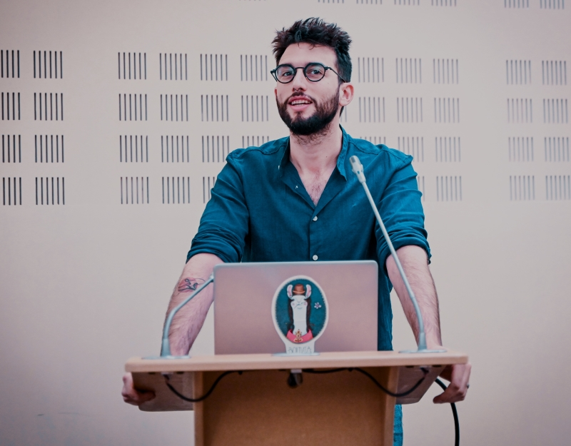
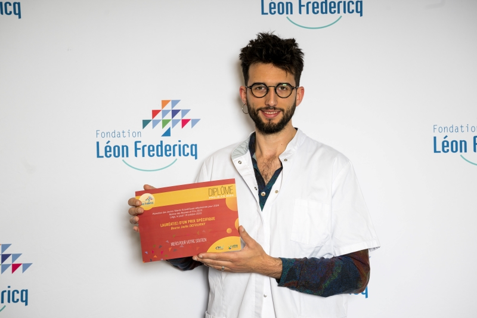
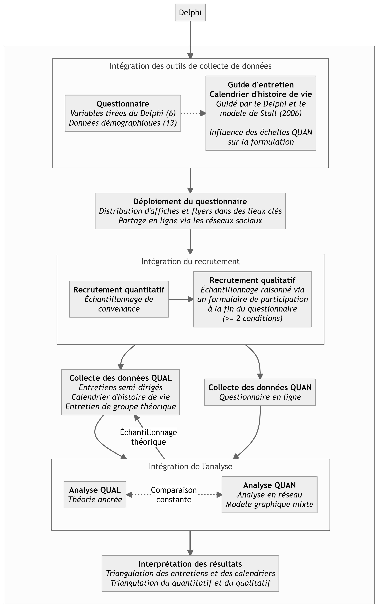

Comité de thèse 2023-2024
Rapport d’avancement sur l’année écoulée et perspectives de fin de thèse
Département de Médecine Générale - Soins primaires et santé
Rétrospective de l’année écoulée
Retard
Retard important accumulé dû à un ensemble de facteurs :
- La complexité du protocole de recherche
- Des évènements personnels (surmenage, déménagement et achat immobilier)
- Des changements professionnels (démission et ouverture d’un cabinet)
Situation actuelle
- Protocole terminé en novembre 2023 et soumis au comité d’éthique
- Version révisée soumise en mars 2024
- Collecte des données prévue dès approbation définitive (mai, idéalement)
Prix
Prix du Généraliste
- Décerné le 9 septembre 2023
- Remis par la SSM-J1
- Récompense pour le TFE de fin d’assistanat

Prix Joëlle Defourny
- Décerné le 19 octobre 2023
- Prix spécifique du fond Léon Fredericq
- Montant de 4000€ pour les frais de fonctionnement de l’étude

Conférences
WONCA
- Organisée par la WONCA2 à Bruxelles
- Présentation orale en anglais (format 1S5M)
Congrès Santé Publique
- Organisée par la SFSP3 à Saint-Étienne
- Présentation orale (15 minutes)
- Co-présentation avec Alix Fournier
Perspectives actuelles et futures
L’étude SyNeRGy
Syndemic Network analysis Research with Grounded theory
Rappels
Importance
- Première étude au monde s’intéressant conjointement à la santé des HSH cisgenres et transgenres à travers le prisme syndémique
- Première étude européenne s’intéressant à la santé des HSH transgenres à travers le prisme syndémique
- Étude mixte
Objectifs
- Étudier l’émergence (syndémogenèse) et le maintien d’une syndémie à travers une approche développementale, chez les HSH en Belgique francophone
- Comparer les parcours et vécus entre les HSH, cisgenres et transgenres, en vue de saisir les différences et similitudes en fonction de la socialisation primaire dans l’émergence d’une syndémie.
- Obtenir une idée de la prévalence et des interactions entre les différentes variables composant la syndémie à travers un volet quantitatif
Une étude mixte pleinement intégrée
- 4 outils de collecte distincts avec deux niveaux de triangulation :
- Le questionnaire quantitatif
- Les entretiens qualitatifs
- Le calendrier d’histoire de vie
- L’entretien de groupe théorique
- Une intégration à 3 niveaux
- Dans l’élaboration des outils de collecte de données
- Dans le recrutement
- Dans l’analyse

Élaboration des outils de collecte des données
Questionnaire quantitatif
Variables syndémiques
- Suicidalité : traduction personnelle du SBQ-R[1]
- Échelle maison pour les comportements sexuels à risque en fonction de FR identifiés[2]
- Soutien social : Multidimensional Scale of Perceived Social Support (MSPSS)[3], traduite en français par Denils et al.[4]
- Dépression : PHQ-8[5]
- Solitude : ULS-8[6], traduite en français par De Grâce et al.[7]
- Estime de soi : Rosenberg Self-Esteem Scale[8], traduite par Vallieres et Valerand[9]
Variables démographiques
- Âge et nationalité
- Lieu de naissance, province de résidence actuelle et type d’habitat (urbain versus rural)
- Niveau de diplôme le plus élevé obtenu, emploi, profession actuelle, revenus, profession des parents
- Sexe assigné à la naissance et identité de genre
- Orientation sexuelle (auto-identification et comportements).
Ce questionnaire représente l’outil principal pour répondre à la RQ1 (Quels sont les contours de la syndémie ?)
Guide d’entretien
- Inspiré du modèle de syndémogenèse de Stall[10] et du Delphi.
- Formulations inspirées du questionnaire quantitatif
- Comprend deux grandes catégories de domaines :
- Domaines de vie : contexte familial, lieux de vie, contexte scolaire, contexte professionnel, parcours sexuel, transition, contexte communautaire
- Domaines syndémiques : idem que pour le questionnaire quantitatif + exploration de la syndémie
Les domaines de vie permettront principalement de répondre à la RQ2 (Comment la syndémie se développe-t-elle ?) Les domaines syndémiques, quant à eux, contribueront de surcroît à répondre à RQ1, et plus spécifiquement à RQ1e (Quelles sont les interactions que l’on retrouve entre les conditions syndémiques dans le public HSH belge francophone ?).
Calendrier d’histoire de vie
- Document séparé amalgamant les différents évènements de vie sous la forme d’un large tableau[11]
- Favorise le rappel et l’analyse séquentielle des évènements
Recrutement
Méthodes de recrutement
- Échantillonnage de convenance : réseaux sociaux, mailing lists, affiches et flyers
- 196 lieux identifiés pour le recrutement physique (voir Figure 1)
- Recrutement qualitatif via le questionnaire (≥ 2 échelles positives)
Figure 1: Lieux de recrutement identifiés, par types de lieux
Critères d’inclusion
- Pour le quantitatif :
- Être un homme, cisgenre ou transgenre, ayant des relations sexuelles avec d’autres hommes, cisgenre ou transgenres
- Vivre en Belgique francophone
- Parler français
- Être âgé d’au moins 18 ans au moment de compléter le questionnaire
- Pour le qualitatif :
- Avoir atteint le cutoff pour au moins 2 échelles du questionnaire quantitatif
Analyse des données
Analyse quantitative
- Analyse de puissance via la méthode de Mihai Constantin[12] : 246-443 participants nécessaires pour une puissance de 80% et une sensibilité de 0.6
- Estimateur sélectionné : modèle graphique mixte avec sélection de modèle par critère d’information bayésien étendu[13] ; estimateur performant même à faible taille d’échantillon
- Méthode de comparaison : technique de modèles de réseaux modérés avec modérateur catégoriel (méthode la plus sensible de comparaison de réseau)[14]

Analyse qualitative
- Approche en théorie ancrée : focalisation sur les processus sociaux et sociopsychologiques en vue d’élaborer une théorie intermédiaire ancrée dans les données[15].
- Permet d’exploiter pleinement le modèle théorique de Stall[10]
- Répond à l’emploi d’une méthode de calendrier d’histoire de vie durant la conduite des entretiens
- Approche constructiviste : co-construction des données et de la théorie par les chercheurs et les participants[15]
- Méthode de comparaison constante pour l’ensemble des données (qualitatives et quantitatives)
Transdisciplinarité et implication du public
Précautions éthiques particulières
- Contexte historique de violence épistémique nécessitant de s’engager dans une éthique de la réciprocité[18] :
- Co-construction des variables de la question de recherche avec des informateurs clés issus du domaine associatif
- Perspective constructiviste du composant qualitatif.
- Importance que les fruits de la recherche bénéficient aux participants :
- Mise en lien des participants au qualitatif avec un psychologue pour une séance gratuite, en présenciel ou en vidéoconférence, selon leur localisation.
- Rétribution épistémique : permettre le retour de l’information aux communautés qui ont permis sa construction
Footnotes
Société Scientifique de Médecine Générale ; branche des jeunes généralistes
Organisation mondiale des médecins généralistes
Société Française de Santé Publique